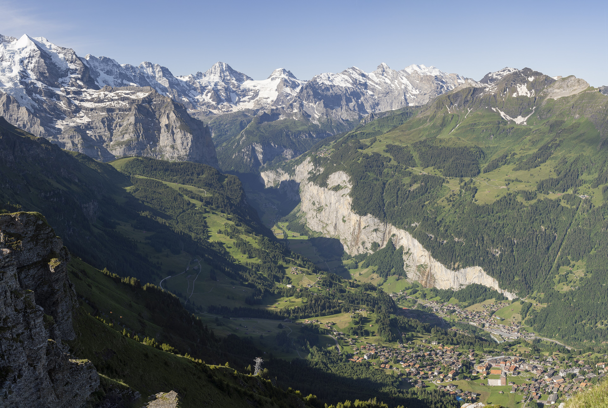
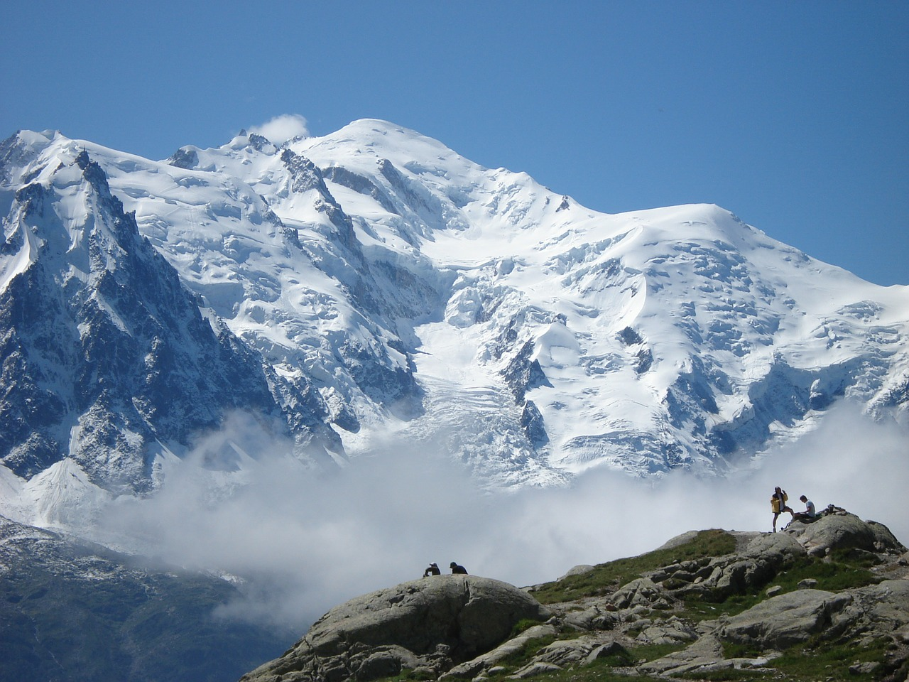
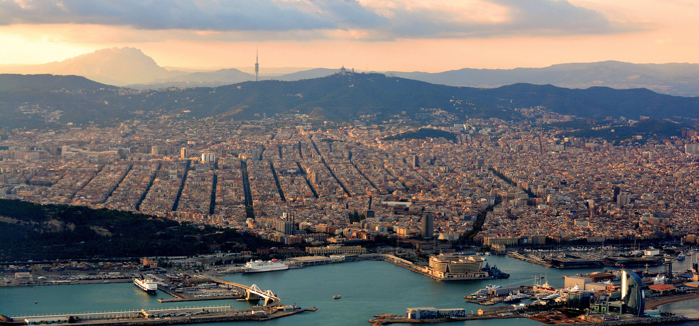

Самый массивный памятник в Европе (высота 91 м, вес более 300 000 тонн). Выглядит как циклопический храм древней цивилизации. Перед ним — гигантский отражающий бассейн («Озеро слез»).
📜 Исторический факт:
Построен ровно через 100 лет (1913 г.) на месте «Битвы народов» 1813 года, где союзные войска России, Пруссии, Австрии и Швеции наголову разбили Наполеона, решив исход войны.
🅿️ ПАРКОВКАParkplatz Völkerschlachtdenkmal (у монумента, бесплатно)
Барочный дворец князей-епископов XVIII века. Парадная лестница перекрыта сводом без единой колонны, на котором написана самая большая цельная потолочная фреска в мире работы Джованни Тьеполо (1753 г.).
📜 Чудо 1945 года:
При бомбардировке 1945 года Вюрцбург был разрушен на 90%, но каменный свод выдержал удар рухнувших горящих балок и спас роспись Тьеполо.
🅿️ ПАРКОВКАResidenzplatz (огромная площадь прямо перед входом)
Древний каменный мост через реку Майн со статуями королей и святых. Вечером горожане берут бокал вина прямо в прибрежных тавернах (традиция Brückenschoppen) и любуются закатом над крепостью на скале.
🅿️ НОЧЕВКА И БЕЗОПАСНАЯ ПАРКОВКАParkhaus Markt (охраняемый подземный паркинг для машины с вещами)

ЭТАП 2 • 534 КМ • ~5.5 Ч
Из средневековой сказки прямо на дно ледникового каньона
Ротенбург внутри крепостных стен, лазурное озеро Thunersee и километровые скалы Альп.
⚙️ Остановки и отклонения (День 2):
534 км • 5 ч 30 мин
📋 Паспорт этапа
Въезд в Альпы (чищеные трассы)
ТрассыA7 ➔ A81 ➔ A2 (Basel) ➔ A1 ➔ A6 ➔ A8
Оплата / ДокументыШвейцарская E-Vignette (онлайн)
⏱️ Почасовой план дня
08:30 — Выезд из Würzburg по автобану A7 на юг.
09:15 – 10:45 — Rothenburg ob der Tauber: съезд ровно на 10 мин, открыточный перекресток Plönlein, прогулка по крытой крепостной галерее.
10:45 – 13:30 — Скоростной автобан A81 к границе Швейцарии (пост Basel, транзит вещей).
🚨 ВЫКЛЮЧИТЬ РОУМИНГ (ГРАНИЦА BASEL)
Швейцария НЕ входит в зону ЕС. Европейский бесплатный роуминг тут не действует — за пару мегабайт спишут десятки евро! Заранее скачайте офлайн-карты Швейцарии в Google/Apple Maps или купите eSIM (Airalo/Holafly).
14:45 – 15:15 — Schloss Oberhofen & Thunersee: остановка на набережной озера Тун, замок на воде на фоне стены Эйгера.
15:45 – Вечер — Прибытие в Lauterbrunnen. Парковка машины в Parkhaus Lauterbrunnen, вечерняя прогулка под 300-метровым водопадом Staubbachfall.
Самый сохранившийся средневековый город Германии. Полностью окружен каменной стеной XIV века с 42 башнями. Никакого современного асфальта и рекламы — только фахверк и мощеные мостовые.
📜 «Мастерский глоток» (1631 г.):
Во время Тридцатилетней войны город был спасен бургомистром, который выпил залпом кубок вина объемом 3.25 литра на спор с фельдмаршалом Тилли.
🅿️ ПАРКОВКАParkplatz P4 (Bezoldweg) (прямо у крепостных ворот)
Замок XII века, чья изящная башенка вырастает прямо из зеркальной ледниковой воды озера Thunersee. Позади озера стеной поднимаются четырехтысячники Эйгер, Мёнх и Юнгфрау.
🅿️ ПАРКОВКАParkplatz Schloss Oberhofen (на набережной)
Дно ледникового каньона между двух отвесных километровых монолитных стен. Водопад Staubbachfall падает на 297 метров прямо за деревянной церковью. Зимой водяная пыль замерзает в аквамариновые ледяные столбы.
🅿️ БЕЗОПАСНАЯ ПАРКОВКАParkhaus Lauterbrunnen (крытый многоуровневый гараж у вокзала)

ЭТАП 3 • 244 КМ • 3.2 Ч
Из долины эльфов к вечным ледникам Монблана
Самый короткий по километражу день: фондю в Gruyères, замок Chillon и подножие Mont Blanc.
⚙️ Остановки и отклонения (День 3):
244 км • 3 ч 15 мин
📋 Паспорт этапа
Легкая дорога по A40
ТрассыA8 ➔ A6 ➔ A12 ➔ A9 ➔ A40
Оплата дорогCH-виньетка + A40 (~6 €)
⏱️ Почасовой план дня
08:30 – 10:30 — Утренняя прогулка к замерзшему водопаду Staubbachfall в Lauterbrunnen.
11:45 – 13:15 — Château de Gruyères: средневековый замок на холме, сырное фондю Moitié-Moitié и музей «Чужого» H.R. Giger.
13:45 – 14:30 — Château de Chillon & Montreux: замок на воде озера Léman, автограф Байрона, пальмы у заснеженных гор.
14:30 – 15:45 — Скоростной подъем во Францию по Autoroute Blanche A40.
📶 Граница Франции: снова зона ЕС, можно включать мобильный интернет и роуминг.
15:45 – Вечер — Прибытие в Chamonix-Mont-Blanc. Гараж Parking Saint-Michel, панорама пика Mont Blanc (4 808 м) и савойский Tartiflette.
Укрепленный замок XIII века на вершине холма. Пешеходная мощеная улочка, традиционные сыроварни и официальный музей/бар создателя «Чужого» Ханса Гигера со скелетными сводами.
🅿️ ПАРКОВКАParking Ville de Gruyères (P1 / P2) (у подножия холма)
Каменный замок на скальном острове в водах Женевского озера. Здесь лорд Байрон вырезал свой автограф на колонне тюрьмы, написав «Шильонский узник». Рядом в Montreux — набережная с пальмами и памятник Фредди Меркьюри.
🅿️ ПАРКОВКАAvenue de Chillon (парковочные карманы прямо перед замком)
Мировая столица альпинизма. Прямо над крышами на 3.8 км вверх взлетает ледяной купол высшей вершины Европы. Вечером — прогулка по улице Rue du Docteur Paccard и горячий савойский Tartiflette.
🅿️ БЕЗОПАСНЫЙ ГАРАЖParking Saint-Michel (подземный охраняемый гараж в центре)
ЭТАП 4 • 392 КМ • ~4.6 Ч
От вечных ледников Альп к теплому югу и древнему Риму
«Альпийская Венеция» Annecy, колоссальный римский акведук Pont du Gard и арена в Nîmes.
⚙️ Остановки и отклонения (День 4):
392 км • 4 ч 35 мин
📋 Паспорт этапа
Спуск в субтропический юг
ТрассыA40 ➔ A41 ➔ A43 ➔ A7 ➔ A9
Оплата дорогПлатные автобаны FR (~35 € картой)
⏱️ Почасовой план дня
08:30 — Выезд из Chamonix вниз по долине по трассе A40.
09:45 – 11:15 — Annecy (Palais de l'Isle): прогулка вдоль бирюзовых каналов старого города, вид на озеро и свежие круассаны.
11:15 – 14:30 — Скоростной бросок на юг по «Магистрали Солнца» A7 вдоль реки Рона.
14:30 – 16:00 — Pont du Gard: грандиозный 49-метровый римский акведук над рекой Gardon, парк с вековыми оливами для собаки.
16:30 – Вечер — Прибытие в Nîmes. Римский амфитеатр Arènes de Nîmes I века и античный храм Maison Carrée.
«Альпийская Венеция» — средневековый город с кристальными каналами, вытекающими из озера Анси. Посреди реки Thiou на островке стоит укрепленный замок-тюрьма XII века в форме носа каменного корабля.
🅿️ ПАРКОВКАParking Sainte-Claire (подземный паркинг у старого города)
Самый высокий уцелевший античный акведук в мире (высота 49 метров — как 16-этажный дом!). Построен римлянами из 6-тонных блоков без капли раствора. Вокруг — парк с оливковыми рощами и река Gardon.
🅿️ ПАРКОВКАParking Pont du Gard (охраняемый паркинг заповедника)
Самый сохранившийся римский амфитеатр на планете (сохранился даже лучше римского Колизея!). Вмещал 24 000 зрителей. В 5 минутах пешком — римский храм Maison Carrée I века н.э. (ЮНЕСКО 2023).
⚠️ Важная проверка перед сном:
Проверьте статус онлайн-регистрации автомобиля в Barcelona ZBE (на сайте zbe.barcelona), чтобы завтра спокойно въехать в Барселону.
🅿️ НОЧЕВКА И ПАРКОВКАParking Q-Park Arènes (подземный охраняемый паркинг)

ЭТАП 5 • 392 КМ • ~4.2 Ч • ФИНИШ! 🎉
Через Пиренеи к Средиземному морю: въезд в Каталонию и новый дом
Подземный форт Salses, сюрреалистический замок Дали и триумфальный финиш на холме Montjuïc!
⚙️ Остановки и отклонения (День 5):
392 км • 4 ч 15 мин
📋 Паспорт этапа
Финал маршрута (+15°C)
ТрассыA9 (FR) ➔ AP-7 (Каталония)
Оплата дорогA9 (~25 €) • AP-7 (БЕСПЛАТНО!)
⏱️ Почасовой план дня
08:30 — Выезд из Nîmes на юг по трассе A9 вдоль лагун Средиземного моря.
10:15 – 11:00 — Forteresse de Salses: съезд с A9 ровно на 5 мин, каталонский полуподземный форт XV века со стенами толщиной 12 метров.
11:30 — Пересечение границы Франции и Испании (Le Perthus). Выезд на AP-7 (бесплатная скоростная магистраль Каталонии).
11:45 – 13:00 — Teatre-Museu Dalí (Figueres): съезд с AP-7 на 10 мин, сюрреалистический замок Дали с гигантскими яйцами на башнях, испанский тапас-обед.
14:45 – 16:00 — Прибытие в Barcelona! Подъем на Mirador de Montjuïc: панорама 360° на море, порт, Саграда Фамилия и новый дом! 🎉
Мощнейшая каталонская военная цитадель XV века, построенная королями Фердинандом и Изабеллой. Чтобы защитить форт от пушек, его буквально «утопили» в землю: стены имеют рекордную толщину до 12 метров, а вокруг вырыт ров с водой.
🅿️ ПАРКОВКАПаркинг Forteresse de Salses (прямо у рва, бесплатно)
Родина Сальвадора Дали. В руинах городского театра художник построил свой главный сюрреалистический замок с яйцами и золотыми статуями на башнях. Сам Дали похоронен в склепе прямо под куполом музея.
🅿️ ПАРКОВКАParking Saba Plaça Catalunya (подземный паркинг в 300 м)
Самая триумфальная смотровая площадка Европы для завершения 2 054-километрового автопутешествия! Панорама 360° на морской порт, кварталы Эшампле, собор Саграда Фамилия и теплое побережье.
🎉 ДОБРО ПОЖАЛОВАТЬ ДОМОЙ!
Маршрут завершен. Впереди заселение, распаковка и новая жизнь в Барселоне!
🅿️ ПАРКОВКА НА ВЕРШИНЕAparcament del Castell de Montjuïc (большая парковка у замка)